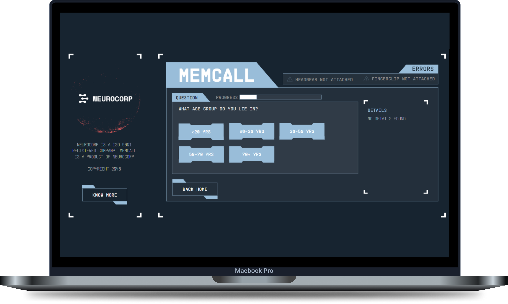
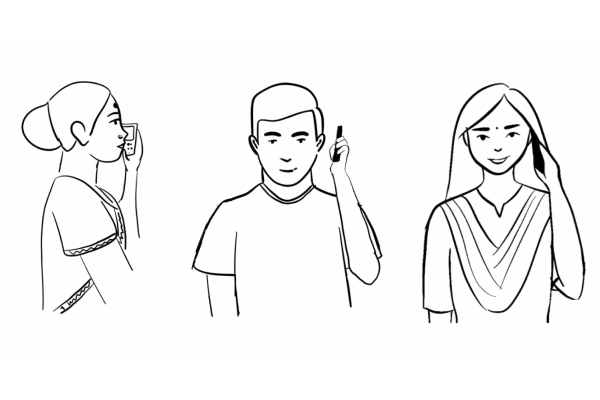

COLLEGE PROJECT
MEMCALL: Design Fiction
Web application to book appointments for recalling and estimating old memories



COLLEGE PROJECT
MEMCALL: Design Fiction
Web application to book appointments for recalling and estimating old memories
View prototype LIVE (https://www.memcall.net/)
WHAT IF
What if you could remember the events of the past and howyou felt like then? In this project we look into a diegetic prototype which allows us to recollectold memories.
01
Neurons accessing device
A device which accessed the neurons of the brain.This device could be attached to the brain and could note the activity of the brain andcontrol it in some manner.
02
Memory selector device
A device which selects the memory to be restored.It could give a visual glimpse of the memory to be restored. The person could look at thememory to be restored while being attached to the device.
03
Website book appointment
Put up a website which allows people to explore theproduct and understand how it helps. Also tell about the product and company.
CURRENT SCENE
People can restore the link to their old memory athome. A person can exactly remember the details and could exactly feel how he/she used tofeel. But the downside is that the person should let go of some of their current memories. Alsothe memories could be restored for a limited amount of time.

01
Questionnaire Section
The questionnaire was divided into multiple sections.Initially the website asks about the age of the person. This is used to show memories onlybelow that age group. In the next section we ask the person which age group memory they wish torevive. This is a personalisation step so that the person doesn’t have to view scenarios ofother age groups. Due to time and resource constraints I had to skip this refining step. Afterthis the person is provided with 3 scenarios and each scenario is followed by 4 questions relatedto the scenario. 1 generic question related to the scenario was also planned, but dueto constraints it could not be put. Link to the Questions and Answers02
Booking Section
This section allows you to book an appointment aswell as question about the functioning of the machine. An error page is added at the end whichleaves people thinking at the end. The interface is similar to that of the current bookingsystems. Additional details like the headgear and finger clip for memory estimation, SSDBF(SensationStored Data in Byte File) add to the details.

03
Error Section
Initial thought was to implement downloading of PDFwith appointment details. Due to time constraints, this was not implemented. Also to leavethe users thinking the idea of an error page was introduced.04
About Section
The about section was introduced so that the peoplestart believing that such a company and its products exist. This includes 4 sections: 1. About This section contains the history of the company and its founder. 2. Products This section contains details about the product MEMCALL.It also contains a link to a prototype specification document. 3. Goals This section contains the goals and objectives ofthe company. 4. Docs This section contains all the links to the documentsand external links.
GOTO YOUTUBE
Introduction video
GOTO DOCUMENT
Specifications
GOTO DOCUMENT
Disclaimer
COMPANY PROJECT : D. E. SHAW
Roadmap Planning Application

COLLEGE PROJECT : IDC, IIT BOMBAY
Maid for you
